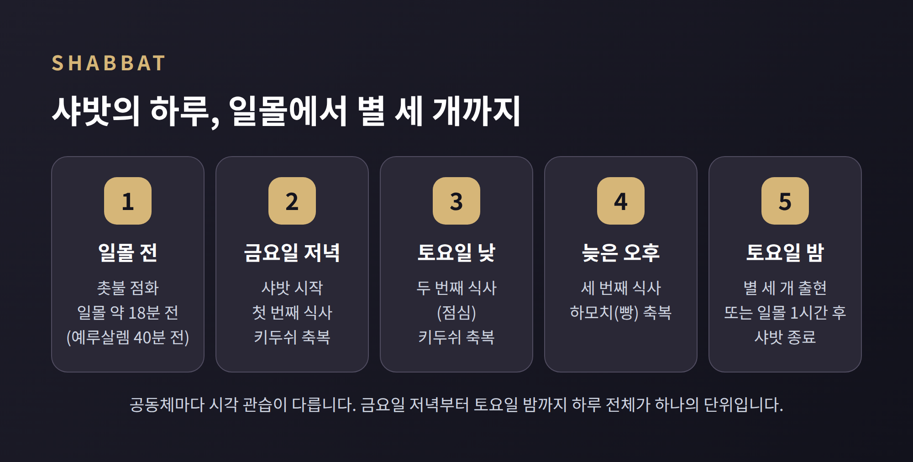
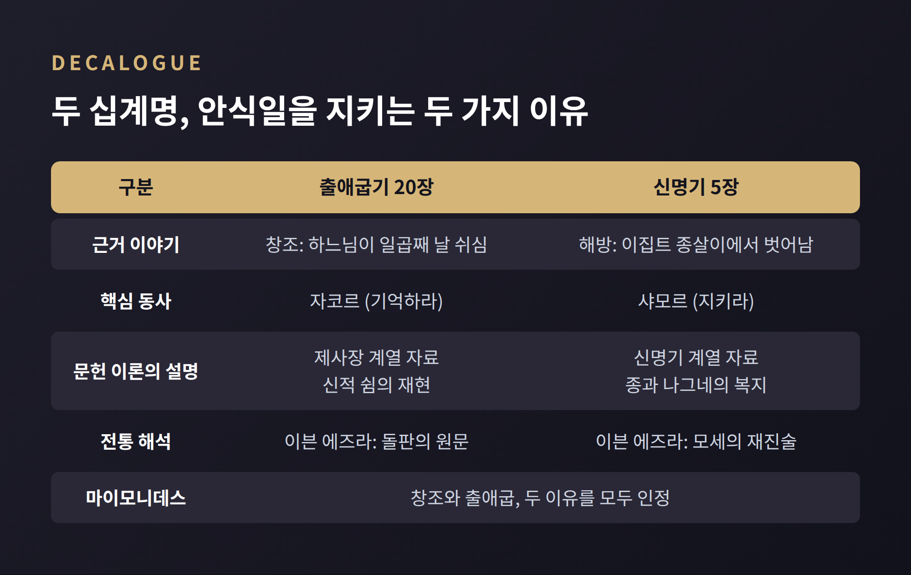
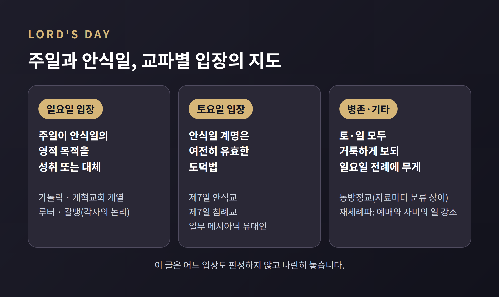
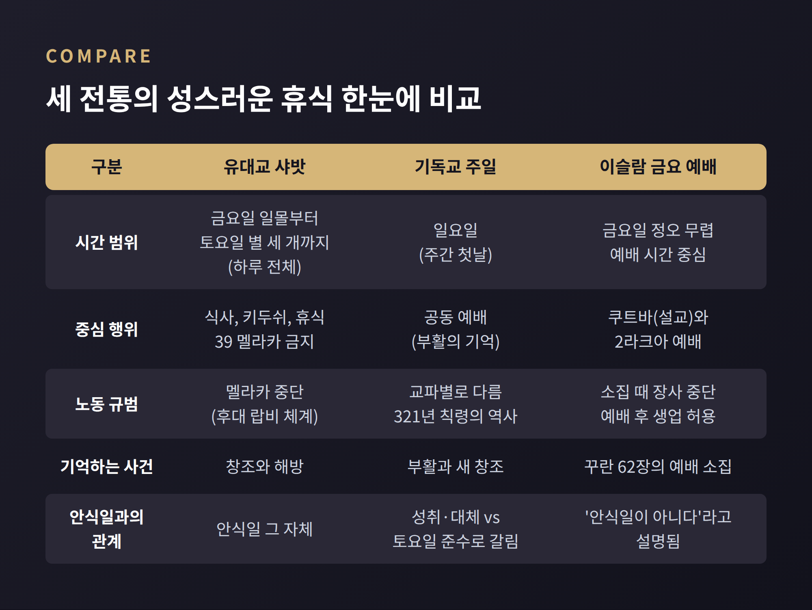
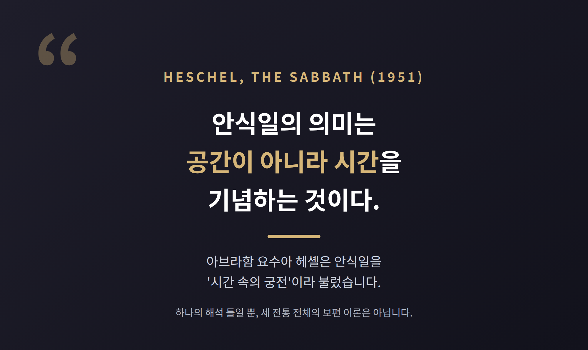

안식일 비교종교학, 샤밧·주일·금요 합동예배로 읽는 성스러운 휴식
세 줄 요약
- 유대교 샤밧은 금요일 일몰부터 토요일 별 세 개가 뜰 때까지 이어지는 하루 전체의 휴식이며, 기독교 주일과 이슬람 금요 합동예배는 저마다 다른 논리로 자리 잡았습니다.
- 주일이 안식일을 '대체'하는지 '성취'하는지, 혹은 안식일은 여전히 토요일인지를 두고 교파마다 입장이 갈립니다. 이 글은 어느 쪽도 판정하지 않고 병기합니다.
- 금요 예배는 '안식일'이 아니라 예배 시간을 보호하는 모임의 날이라는 점에서, 세 전통을 같은 잣대로 재면 오히려 차이가 선명해집니다.

오늘은 안식일과 성스러운 휴식에 대해 이야기해 보려 합니다. 유대교의 샤밧, 기독교의 주일, 이슬람의 금요 합동예배를 나란히 놓고 종교학의 눈으로 읽어 보겠습니다. 어느 신앙이 옳은가를 가리는 글이 아니라, 세 전통이 시간을 어떻게 나누고 지켜 왔는지를 살피는 교양 글입니다.
■ 샤밧, 일몰에서 별 세 개까지
유대교의 안식일, 샤밧은 금요일 해가 지기 몇 분 전에 시작됩니다.
촛불을 켜는 시각은 일몰 18분 전이 가장 흔하고, 예루살렘의 관습은 40분 전입니다.
끝나는 때는 토요일 밤 하늘에 별 세 개가 나타날 무렵입니다. 일몰 한 시간 뒤로 잡기도 합니다.
식사는 세 번입니다. 금요일 저녁, 토요일 점심, 토요일 늦은 오후. 앞의 두 끼는 포도주 위의 키두쉬 축복으로 열고, 세 번째 끼니는 빵을 놓고 드리는 하모치 축복으로 엽니다.
샤밧은 '하루의 한 부분'이 아니라 '하루 전체'입니다. 이 점이 뒤에 나올 두 전통과 갈리는 첫 번째 지점입니다.

■ 39가지 멜라카, 그리고 그 논쟁
샤밧에는 금지되는 '멜라카(노동)'가 39가지 있다고 전해집니다.
쓰기, 짓기, 불과 관련된 행위, 요리, 물건 만들기, 그리고 사적 영역과 공적 영역 사이에서 물건을 나르는 일 등이 여기에 들어갑니다.
흥미로운 것은 이 '노동'의 뜻입니다. 힘든 일을 뜻하는 것이 아닙니다. 의도적으로 행하는 활동, 기술과 솜씨가 깃든 행위를 가리킵니다.
그래서 오늘날 정통파와 보수파는 일반적으로 전기 사용과 자동차 운행을 금합니다. 개혁 전통에서는 개인이 지킬 정도를 스스로 정합니다. 안식일 시계나 안식일 엘리베이터 같은 절충 장치도 있습니다.
학술적으로 살피면 이야기가 조금 달라집니다. 39가지 목록은 기원후 200년경 편찬된 미슈나 샤밧 7:2에 나오며, 히브리 성경 자체에는 이 목록이 없습니다.
주디스 하우프트만 교수는 이 대목이 나중에 덧붙여진 보충이라고 봅니다. 빵 만들기나 옷감 만들기처럼, 한 제품에 이르는 순차 단계를 예로 든 것이지 금지 노동의 완전한 정의가 아니라는 주장입니다.
전통 안에서는 체계로, 역사학에서는 후대 랍비들의 편집으로 읽힙니다. 두 시선이 공존합니다.
■ 두 가지 십계명, 두 가지 이유
성경 속 안식일에는 이유가 둘 있습니다.
출애굽기 20장은 창조에서 찾습니다. 하느님이 일곱째 날 쉬셨기에 이날을 기억하라고 합니다.
신명기 5장은 해방에서 찾습니다. 이집트에서 종살이했던 일을 떠올리며 종과 나그네, 가축까지 쉬게 하라고 합니다.
동사도 다릅니다. 출애굽기는 '기억하라(자코르)', 신명기는 '지키라(샤모르)'입니다.
문헌 이론을 따르는 학자들은 전자를 제사장 계열 자료, 후자를 신명기 계열 자료로 설명합니다. 앞쪽은 신적 쉼의 재현에, 뒤쪽은 약자의 복지에 무게가 실린다는 것입니다.
전통 해석은 조금 다릅니다. 이븐 에즈라는 출애굽기 문구가 돌판의 원문이고 신명기는 모세의 재진술이라고 보았습니다. 마이모니데스는 창조와 출애굽을 모두 이유로 인정했습니다.
어느 해석이 맞는지는 이 글에서 정하지 않습니다. 다만 안식일이 처음부터 '우주의 기억'과 '사회적 배려'라는 두 얼굴을 지녔다는 점은 눈여겨볼 만합니다.
기원 논쟁도 있습니다. 바빌로니아의 보름날을 뜻하는 샤파투와 이어진다는 설이 있는 반면, 성경의 안식일은 바빌로니아에 대응물이 없는 독자적 발전이라는 견해도 있습니다. 기원은 확정되지 않았습니다.

■ 기독교 주일, 안식일과 같은가 다른가
기독교의 주일은 일요일입니다. 신약에서 '주의 날'이라는 표현은 요한계시록 1:10에 한 번 나옵니다.
'주간 첫날'은 사도행전 20:7에서 드로아 신자들이 빵을 떼는 날로, 고린도전서 16:2에서는 헌금하는 날로 나옵니다. 복음서는 부활 사건을 그 첫날과 연결합니다.
초기 문헌에서는 디다케가 주의 날에 모여 빵을 떼고 감사하라고 권합니다. 2세기 중반 순교자 유스티누스는 "우리는 모두 태양의 날에 모인다"고 적었습니다. 그는 이날을 창조와 부활의 기념일로 보았고, 안식일식 휴식일로 다루지는 않았습니다.
이 구절이 후대 삽입일 수 있다는 의문도 제기됩니다.
321년 3월 7일, 콘스탄티누스 황제가 칙령을 내립니다. "존엄한 태양의 날에 관리와 도시 거주민은 쉬고, 모든 작업장은 닫는다." 농사짓는 사람은 예외였습니다. 파종이나 포도 심기에는 다른 날이 더 알맞은 경우가 많다는 이유였습니다.
이 칙령의 동기를 두고도 해석이 갈립니다. 이교적 태양 숭배 전통과 유대-기독교 십계명 전통을 함께 아우른 절충이라는 설명이 있습니다. 363년 라오디게아 공의회는 기독교인이 토요일 안식일을 지키는 것을 금하고 일요일 휴식을 권했습니다. 이는 칙령 이후에도 정착이 매끄럽지 않았음을 보여 주는 대목으로 읽힙니다.
그렇다면 주일은 안식일과 같은 날일까요. 교파에 따라 답이 다릅니다.
- 가톨릭과 개혁교회 계열: 주일이 안식일의 영적 목적을 성취하거나 대체한다고 봅니다. 가톨릭은 계명 자체는 유효하되 의례적 준수가 일요 예배로 옮겨졌다고 설명합니다.
- 루터와 칼뱅: 루터는 외적인 안식일 준수를 유대인의 몫으로 보았고, 칼뱅은 그리스도가 안식일 요구를 성취했으므로 하루가 아닌 지속적 헌신이 필요하다고 보았습니다.
- 제7일 안식교, 제7일 침례교: 안식일 계명을 여전히 유효한 도덕법으로 보고 금요일 일몰부터 토요일 일몰까지 지킵니다.
- 동방정교: 토요일과 일요일을 모두 거룩하게 여기되 일요일의 전례에 무게를 싣는다는 설명이 있습니다. 다만 자료마다 분류가 엇갈려, 이 글은 교파마다 설명이 다르다고만 적어 둡니다.

■ 이슬람 금요 합동예배, 쉼이 아니라 모임
이슬람의 금요일은 조금 다릅니다. 백과사전류 해설은 "이슬람에서 금요일은 안식일이 아니다"라고 분명히 적습니다. 성스러운 날이기는 하되, 하루 전체의 휴식일이 아니라는 뜻입니다.
근거 구절은 꾸란 62장 9절입니다. "금요일에 예배 소집이 울리면 하느님을 기억하는 곳으로 서둘러 가고 장사를 그만두라."
바로 다음 절이 요점입니다. "예배가 끝나면 땅에 흩어져 하느님의 은총을 구하라." 예배가 끝나면 생업으로 돌아가도 됩니다.
구조는 이렇습니다. 설교(쿠트바)는 두 부분으로 나뉘고, 그 사이에 이맘이 잠깐 앉습니다. 설교에는 하느님 찬양, 무함마드에 대한 축복, 꾸란 구절, 경건을 일깨우는 권면이 들어갑니다.
예배는 2라크아이며 정오 예배를 대신합니다. 성인 남성은 모임에 참석하도록 기대되고, 여성과 아이는 참석할 수 있으나 공식 의무는 아닙니다.
법학파 사이에도 차이가 있습니다. 정당한 통치자의 임석이 필요한지를 두고 하나피와 12이맘 시아는 요구하고, 샤피이·말리키·한발리는 요구하지 않습니다.
나라별 휴일 제도도 다양합니다. 사우디아라비아와 방글라데시는 금요일을 휴일로 삼고, 파키스탄은 부분 휴무, 인도네시아는 일요일을 주 휴일로 삼습니다.
62장 11절에는 일화도 있습니다. 예언자가 설교하는 동안 대상(카라반)이 도착하자 사람들이 그쪽으로 몰려갔다는 이야기입니다. 성스러운 시간이 상거래와 부딪치는 순간을 그린 장면입니다.

■ 종교학은 이 차이를 어떻게 읽을까
예전엔 안식일을 '쉬는 날'로만 보았습니다. 지금은 '시간을 구별하는 방식'으로 읽는 시각이 널리 쓰입니다.
아브라함 요수아 헤셸은 1951년 『안식일』에서 현대 문명이 공간을 정복하고 소유를 쌓는 데 집착한다고 진단했습니다. 그리고 안식일을 '시간 속의 궁전'이라 불렀습니다. "안식일의 의미는 공간이 아니라 시간을 기념하는 것"이라고 썼습니다.
이 렌즈로 세 전통을 보면 그림이 또렷해집니다.
- 샤밧: 하루 전체를 성스럽게 구별하고, 노동의 범주를 세분해 그 시간을 지킵니다.
- 주일: 부활의 기억을 중심에 두고, 공동 예배와 휴식을 교파마다 다른 비율로 묶습니다.
- 금요 합동예배: 예배 시간을 보호하되 예배 뒤의 일상은 열어 둡니다.
단, 조심할 점이 있습니다. 헤셸은 유대교 내부의 신학자입니다. 그의 '시간의 성소'는 하나의 해석 틀이지, 세 전통 모두에 들어맞는 보편 이론은 아닙니다.
특히 금요 예배는 '안식일'이라는 범주에 끼워 넣기 어렵습니다. 비교는 닮은 점을 찾는 작업이기도 하지만, 들어맞지 않는 곳을 확인하는 작업이기도 합니다.

정리하면 이렇습니다.
샤밧은 하루 전체를, 주일은 부활을 기억하는 첫날의 예배를, 금요 합동예배는 예배의 시간을 성스럽게 구별합니다. 세 전통 모두 일상의 흐름에 '멈춤'을 새겼다는 점은 같지만, 멈추는 이유와 범위는 다릅니다.
결국 남는 것은 하나입니다. "성스러운 시간은 달력 위의 칸이 아니라, 공동체가 함께 멈추기로 약속한 방식이다."
이 글이 세 전통을 같은 저울에 올리지 않고, 저마다의 무게로 읽는 데 작은 실마리가 되었기를 바랍니다. 만약 일주일에 하루를 어떤 이름으로든 성스럽게 구별해 본다면, 여러분은 무엇을 멈추시겠습니까.